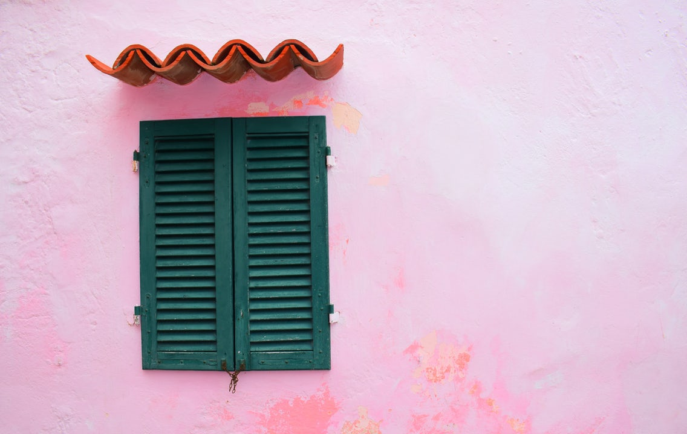

Visiting the pastelle city
By Jerry Henderson, in Tourism


As you drive into thw town from Alicante airport you will pass between two salt lakes - one is blue/green and the other is an impressive pink colour.